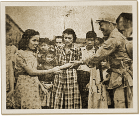

|
j
a v a s c r i p t |
February 15, 1942
Manila is full of stories of the atrocious behavior of some Japanese soldiers. Ramon Fernandez and his cochero were slapped for no reason. A soldier grabbed Antonio Araneta's cigar and burned his thumb. A kid got slapped because he got the residence certificate for his boss one day, then appeared the next day to get one for the boss's wife. And yet Ramon was allowed to get three at the same time. There were five lines of women trying to get their certificates yesterday. Vendors were doing a roaring trade selling snacks and even water at one centavo a glass. The Tribune took delight in announcing that "Hundreds of men were told to go home [yesterday] and come back today." But it's obvious the Japanese have given no thought to the comfort of the people lining up hour after hour under the hot sun, to maybe — only maybe — get their certificates.

Pass the Cucumber
Instead, we get stupid propaganda like a picture, "which cannot lie," in La Vanguardia of a girl handing a cucumber to a smiling soldier. He "tried to pay ... but the girl refused payment, preferring to gift it to the soldier." A lady nearby (possibly her friend) appears to be praying in terror. Reception was poor tonight so I tuned in to Tokyo and heard an announcement that 31 ships, including 2 NEI complete navies, were sunk off Singapore in five days. Could it be true? "We never have to indulge in propaganda like the U.S. because we have nothing to hide and we are honorable." (Pass the cucumber.) |
|
|
|
|